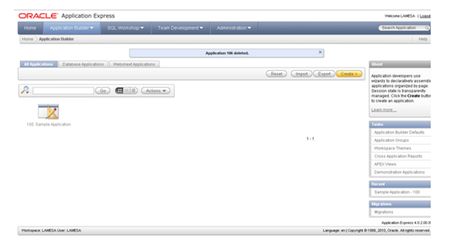

UD4 - Actividad 3 - Enunciado
Pulsa aquí para visualizar: UD4 - Actividad 3 - Enunciado
UF2215. UD4. Actividad 3. Caso práctico: Generador de aplicaciones
Enunciado (Descripción)
Un generador de aplicaciones es una herramienta para crear programas que hagan de interface entre el usuario y la base de datos. El uso de un generador de aplicaciones puede reducir el tiempo que se necesita para diseñar un programa de aplicación.
Los generadores de aplicaciones constan de procedimientos que realizan las funciones fundamentales que se utilizan en la mayoría de los programas. Estos procedimientos están escritos en un lenguaje de programación de alto nivel y forman una librería de funciones entre las que escoger. El usuario especifica qué debe hacer el programa y el generador de aplicaciones es quien determina cómo realizar la tarea.
Preguntas / Actividades a realizar
Una vez expuesto estos conceptos realiza las siguientes cuestiones:
Pregunta 1. Haciendo uso de una plantilla Excel (como fuente de información de la que se va a nutrir nuestra base de datos), vamos a generar una aplicación en APEX Oracle (que es una herramienta que permite desarrollar prototipos de aplicaciones WEB de forma segura y rápida), llamada“Inmuebles”. Dicha aplicación estará creada en modo lectura y escritura.
Para realizar esta aplicación ayúdate del interfaz incluido en la pestaña llamada “Application Builder” que podemos encontrar en Application Express de Oracle (APEX).
Una vez que hagáis clic en el botón de Create, dentro de la pestaña All Applications, os aparecerá una interfaz que nos irá guiando sobre los pasos necesarios a completar hasta generar nuestra aplicación.

Para crear nuestra aplicación teniendo en cuenta que:
- Que se basará en un tipo database.
- Que el método que usaremos será From Spreadsheet (en este caso partiremos de una hoja de cálculo Excel).
- Que dicha hoja de cálculo Excel se llamará BD-Inmuebles.xls y que nos la podemos descargar de este enlace:
http://superalumnos.net/base-de-datos-de-ejemplo-inmobiliaria - Que vamos a necesitar también abrir este fichero Excel con el programa Calc de OpenOffice. Para ello deberemos descargarnos esta herramienta de este enlace:
https://www.openoffice.org/es/producto/calc.html - Que una vez que tengas el fichero Excel abierto con el programa Calc debes guardarlo como tipo de Text (.CSV) de esta forma:
También debes de tener en cuenta que posteriormente debes hacer clic en Mantener el formato actual.
De esta manera ya estaremos en disposición de poder exportar a un archivo de texto configurándolo de la siguiente manera:
Finalmente solo tendremos que hacer clic en Aceptar y ya tendremos nuestro fichero guardado en forma CSV. De esta manera podemos usarlo en la aplicación que creemos.
- Que nuestra Table name se llamará también “Inmuebles” al igual que nuestra aplicación.
- Y donde daremos un Singular Name y un Plural Name. En este caso “inmobiliaria” e “inmobiliarias” respectivamente.
- Que usaremos un tema de interfaz de usuario llamado Theme 3.
Pregunta 2. Realiza una consulta sobre“pisos que están en alquiler” haciendo uso de la aplicación Inmuebles creada anteriormente. Para ello crearemos filtros basándonos en el campo de búsqueda Tipo: Piso y en el campo Operación Provincia: Alquiler.